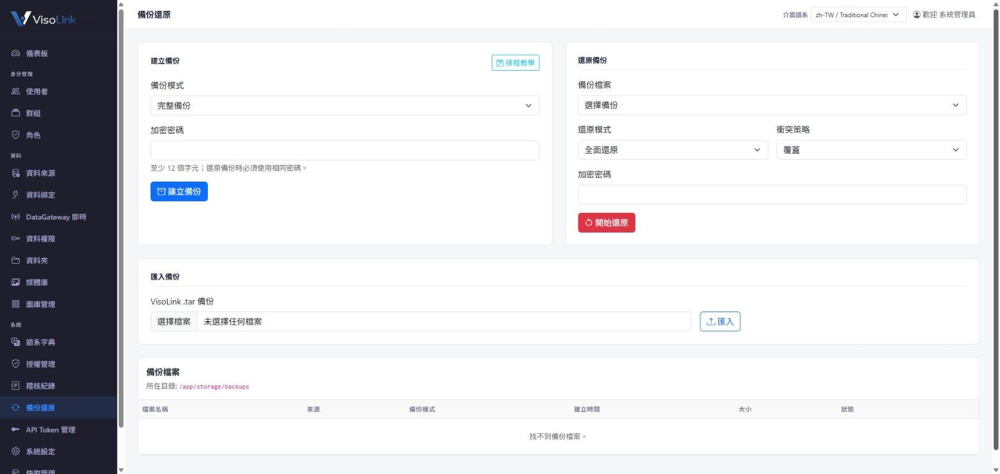

Backup & Restore 備份還原
建立、保存與還原系統備份。還原與刪除會影響既有資料，請由授權管理者在維護時段執行。
建立備份

- 開啟「系統 → 備份還原」，選擇建立備份。
- 選擇備份模式及要納入的資料類型。
- 如需加密，設定至少 12 個字元的備份密碼並安全保存。
- 確認範圍後建立，等待狀態顯示完成再離開。
備份密碼無法由系統代為還原；遺失密碼將無法使用加密備份。
查看與下載備份
- 在備份清單確認建立時間、模式、檔案大小與狀態。
- 只下載狀態為完成的備份。
- 將檔案移至組織核准的保管位置，並依政策定期驗證可讀性。
匯入備份檔案
- 點選匯入備份並選擇系統支援的備份檔。
- 確認檔案來源、日期與環境相符。
- 上傳後等待檔案出現在備份清單，再進行還原。
匯入檔案顯示在備份清單，日期、大小與狀態皆可辨識。
匯入不等於還原，不會立即覆寫現有資料。
執行資料還原
先備份現況保留可回復版本
核對還原範圍模式、衝突策略與資料類型
完成後驗收帳號、圖面、資料與關鍵操作
- 先建立目前狀態的可用備份，並安排維護時段。
- 從清單選擇目標備份，確認還原模式、衝突處理方式及資料類型。
- 加密備份需輸入原備份密碼。
- 再次核對影響範圍後執行；完成前不要關閉頁面或重啟服務。
- 完成後驗證帳號、圖面、資料設定及關鍵操作。
還原狀態完成，帳號、圖面、資料設定與代表性功能均通過驗收。
還原可能取代或合併既有資料。未經影響評估與回復方案確認，不要在正式服務時段執行。
刪除備份
- 確認備份已超過保存期限，且不是唯一可回復版本。
- 於清單選擇刪除並閱讀確認訊息。
- 確認後再刪除，並更新外部備份保管紀錄。
刪除後無法由清單復原；如仍有稽核或災難復原需求，應先保留核准副本。
查看備份排程引導
- 開啟排程引導並選擇伺服器作業環境。
- 設定排程名稱、每日執行時間及必要的備份選項。
- 使用專用且最小權限的 Backup API Token，不與一般人員共用。
- 依組織維運規範完成排程，首次執行後回到備份清單確認結果。
排程腳本、密碼與 Token 應保存在受管控位置，不應貼入公開文件或一般訊息管道。
備份頁與 VisoLink 備份中心的關係
VisoLink 在自己的「備份還原」頁就能手動備份與還原；VisoLink 備份中心則是另外安裝的產品，提供多套系統的中央管理、排程與自動化，可統一排程備份與還原，或在新機器上整套還原。兩者並存，VL-Admin 原本的備份頁照常可用。
| 用途 | 建議做法 |
|---|---|
| 臨時備份、單次還原 | 在本頁「建立備份」「開始還原」。 |
| 每天固定時間自動備份（單一系統） | 依本頁「排程教學」用作業系統排程呼叫備份 API。 |
| 多套系統統一排程、集中保存與還原 | 使用 VisoLink 備份中心，在備份中心登錄這套 VisoLink。 |
- 到 API Token 管理 建立 Token 類型為「備份 API」的 Token；需要備份中心在備份期間自動切換維護中時，勾選「同時允許讀取與切換運作狀態（運作中／維護中）」。
- 在備份中心登錄這套 VisoLink，填入位址與 Token（操作見備份中心手冊）。
- 備份中心產生的備份會出現在本頁「備份檔案」清單，「來源」欄可辨識。
還原期間系統停止讀取、接收與寫入，全部類型寫完才恢復；失敗或中斷也會恢復運作。系統設定中的授權安裝識別碼不隨備份移動。